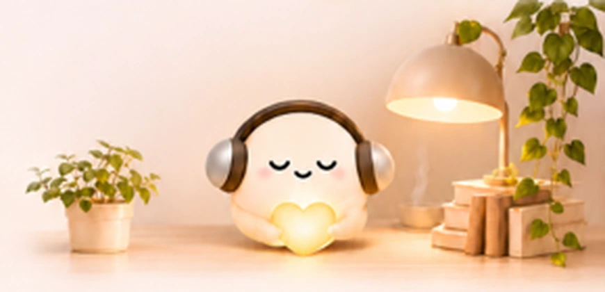
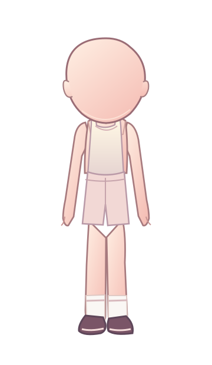
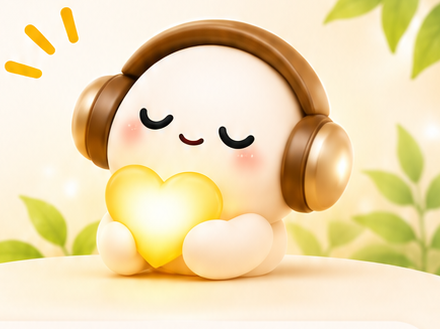
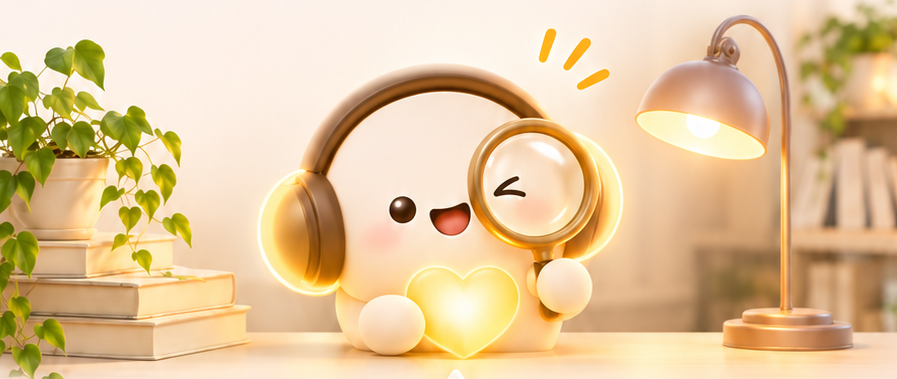
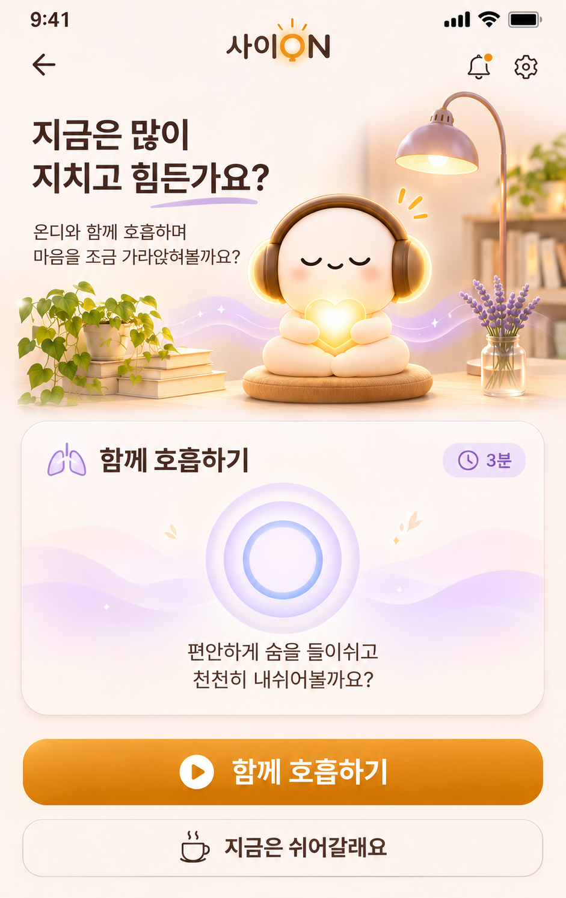
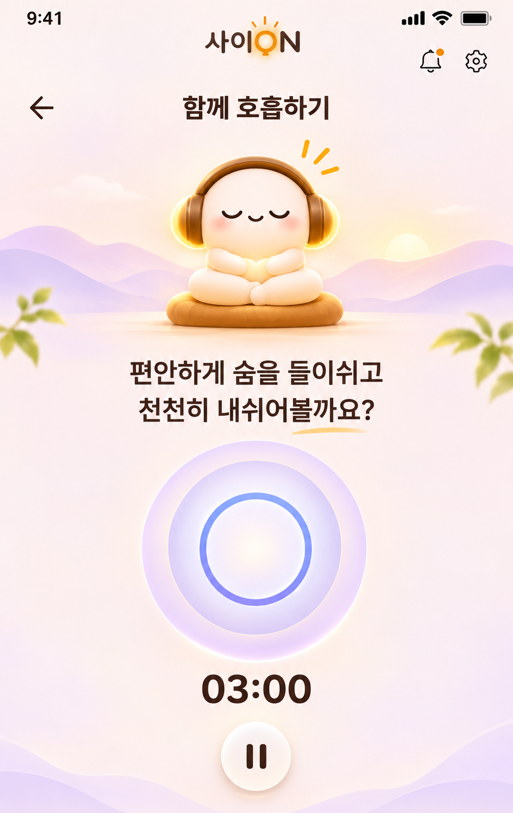
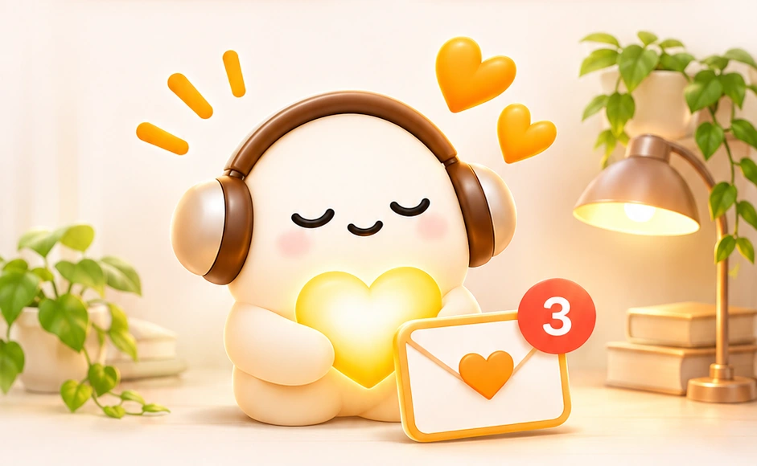
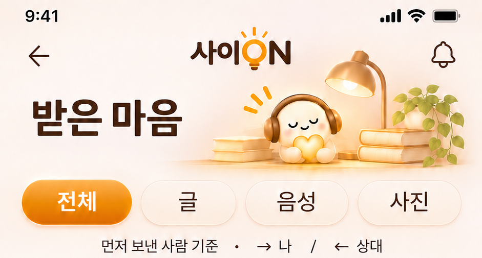
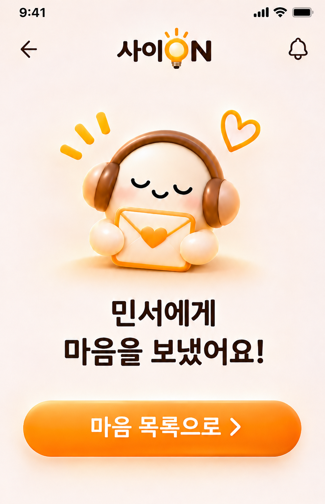
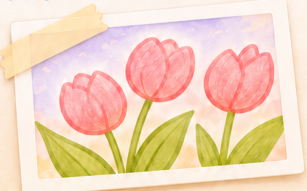

약관 본문
서비스 이용과 관련된 권리와 책임을 확인하는 영역입니다.
화면 시안 · 정식 약관 적용 예정
현재 적용 약관v1.0 (프로토타입)

SCREEN AUTH-010
♙ 가입 정보›✓ 약관 동의
마음을 나누고, 더 가까이 이어지는
따뜻한 소통을 시작해요.
프로토타입 · 실제 계정/서버 생성 없음 · 비밀번호 저장 안 함
사이ON을 더 안전하고 따뜻하게
이용하기 위한 약관과 정책이에요.
서비스 이용과 관련된 권리와 책임을 확인하는 영역입니다.
화면 시안 · 정식 약관 적용 예정
내 정보와 알림을 관리해보세요.
ⓘ 감정 기록과 온디 대화는 자동 공유되지 않아요.
내가 고른 내용만 직접 전달합니다.
사이ON의 알림으로
마음을 더 가까이 나눠보세요.
🍃 내가 요청한 시간에만, 답하지 않아도 재촉하지 않아요.
실제 푸시 알림 발송은 아직 연결하지 않았어요.
나의 기본 정보
홈오피스 서재 · 오늘의 마음 전등

☁ 서재에 라벤더빛을 켰어요.
지금 느끼는 마음을 선택하고
온디와 함께 기록해보세요.

좋아요! 😊
지금의 기분을 이렇게 기록해두면,
내 마음을 더 잘 이해할 수 있어요.
날짜를 누르면 그날의 기록을 볼 수 있어요.
🔒 내 감정 기록은 나에게만 보여요.
마음 다시 묻기 · 오후 4:00

지금 상태를 다시 확인해볼까요?
정말 잘하고 있어요.
이 기분을 소중한 사람과 나눠볼까요?
“우리 딸, 오늘도 충분히 잘하고 있어. 조금만 더 힘내봐, 엄마가 응원해.”
“우리 딸, 오늘도 충분히 잘하고 있어. 조금만 더 힘내자, 엄마가 응원해.”




소중한 사람에게 마음을 전해보세요.
다음 단계에서 사진 배경 · 글 · 음성을 함께 담을 수 있어요.
배경을 고르고 카드 위에 마음을 적어보세요.
그림 느낌을 골라 카드 배경으로 사용할 수 있어요.
원하면 내 목소리도 함께 보낼 수 있어요.
마이크 사용을 허용하면 녹음할 수 있어요. 음성 없이 보내도 괜찮아요.
※ 실제 음성은 기기 브라우저에 저장되며, 상대방에게 네트워크로 전송되지 않습니다.
보낼 마음카드와 감정을 마지막으로 확인해 보세요.
보내고 싶은 마음을 감정등으로 선택해 주세요.


샘플 음성 · 시연용 읽어주기
함께 나눈 마음을 모아봐요
연결된 사람들끼리 공유한 기록만 표시돼요. 나의 개인 감정 기록과 온디 대화는 포함되지 않아요.